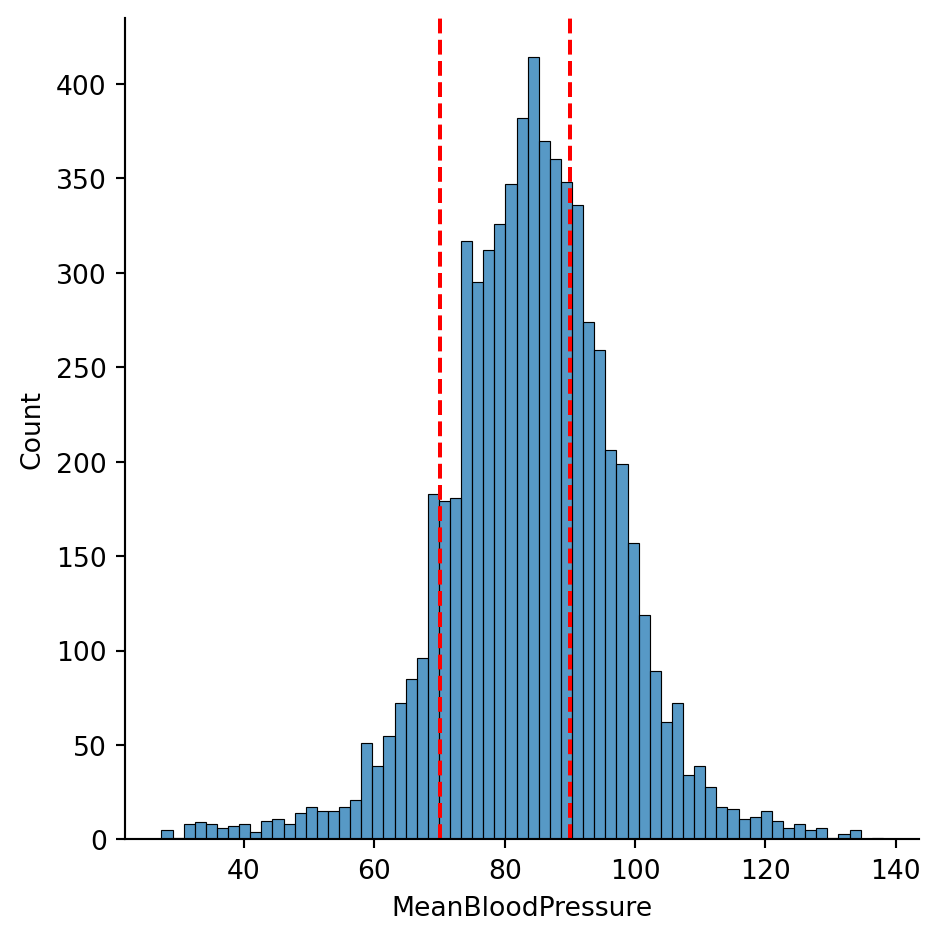

In the first week of class, we will look at Machine Learning from a end-to-end perspective to see what the course will be about! Then, we will get our hands on the NumPy package to prepare our data for our machine learning models for the rest of the course.
2.1 Learning Objectives for today
Describe the main use cases of a Machine Learning model.
Describe the overarching workflow of Machine Learning:
Describe the importance of allocating the data into Training and Testing sets.
Describe some criteria for choosing predictors for a Machine Learning model.
Describe the process of evaluating a Machine Learning model.
Describe the components of a Python Data Structure.
The Mean Blood Pressure is our Response Variable or Outcome we wish to make predictions on, given Predictor Variables we have in the NHANES dataset. We have ~70 predictors we can consider, some of which include: Age, BMI, Average Number of Hours Slept, Gender, Income, Highest Education, Martial Status, Mental health questionnaires, and so forth.
Suppose that we decide to use the predictors \(Age\) and \(BMI\) for our machine learning model, and formulate it algebraically:
\[
MeanBloodPressure=f(Age, BMI)
\]
where \(f(Age, BMI)\) is a function that represents a machine learning model that takes in the predictors \(Age\), \(BMI\), and make a prediction on one’s \(MeanBloodPressure\). We use some of the data to build this machine learning model:
How did we arrive at this equation form and the numbers \(20\), \(3\), and \(-.2\)? They were estimated from the data as well as some assumptions of the equation form to be Linear.
Given this model, suppose are given a person’s \(Age\) to be 30 and \(BMI\) to be 34. Then, we can make a prediction using this model:
To see how accurate our prediction is, we can compare our predicted response to the true response, if we have the data for that. That will give us feedback on how well our model is and let us make improvements to it.
2.2.1 Broader Usage
A machine learning model, such as the one described above, has two main uses:
Classification and Prediction (Focus of this course): How accurately can we predict or classify the outcome?
Prediction: Given a person’s \(Age, BMI\), predict the person’s \(MeanBloodPressure\) value. The outcome is a continuous value.
Classification: This is when the response is a categorical value, such as Yes/No. As an example, we can consider classifying Yes/No whether a person has \(Hypertension\) or not using predictors \(Age\) and \(BMI\).
Inference (Secondary in this course): Which predictors are associated with the response, and how strong is the association?
Prediction model example: Using the linear model above as an example, each predictor has a relationship to the outcome: an increase of \(Age\) by 1 will lead to an increase of \(MeanBloodPressure\) by 3. This measures the strength of association between a variable and the outcome.
Classification model example: What is the odds ratio of of \(Age\) on \(Hyptertension\)? If the odds ratio of \(Age\) on \(Hyptertension\) is 2, then an increase of 1 in \(Age\) increases the odds of \(Hyptertension\) by 2.
2.3 The conceptual example, in more depth
Let’s walk through our conceptual example again, but in more depth, and with code examples. This will illustrate the complexity and the strategies involved in the Machine Learning roadmap we will explore carefully throughout the course.
2.3.1 Visualizing the outcome
Building a sound machine learning model requires careful understanding of the data, and we often start looking at the response variable.
import pandas as pdimport seaborn as snsimport numpy as npfrom sklearn.model_selection import train_test_splitimport matplotlib.pyplot as pltfrom formulaic import model_matriximport statsmodels.api as smnhanes = pd.read_csv("classroom_data/NHANES.csv")nhanes.drop_duplicates(inplace=True)nhanes['MeanBloodPressure'] = nhanes['BPDiaAve'] + (nhanes['BPSysAve'] - nhanes['BPDiaAve']) /3plt.clf()g = sns.displot(x="MeanBloodPressure", data=nhanes)g.refline(x=70, color='r', linestyle='--')g.refline(x=90, color='r', linestyle='--')plt.show()
<Figure size 672x480 with 0 Axes>

We see that the \(MeanBloodPressure\) is fairly symmetrically distributed. A person has normal blood pressure if their \(MeanBloodPressure\) is between values of 70 and ~90, which we have shown in the dotted vertical lines. There seems to be more people with elevated blood pressure, as there are more counts above 80 than below 80.
Mean Arterial Pressure
Interpretation
Hypotension
<70
Normal
70-92
Stage 1 Hypertension
92-96
Stage 2 Hypertension
>96
Usually, a symmetric, continuous distribution for the response variable is a great way to start the machine learning modeling process, as a lot of models assume a symmetric, continuous distribution for the model to perform well.
If the response distribution is strongly skewed, then we may want to perform mathematical transformations fix it.
If the response distribution has multiple peaks (multi-modal), we may want to perform mathematical transformations, or consider reformulate the problem as a (multi-class) classification problem, if the interpretation makes sense.
2.3.2 Splitting the data
Our dataset has 7832 data points:
print(nhanes.shape)
(7832, 77)
In Machine Learning, we need to carefully allocate how we want to use our data. In the machine learning model development process, we reserve some of the data, called the Training Set to allow the model learn from the data, and reserve the rest of the data, called the Testing Set to allow the model to be tested on new, unseen data.
A logistical and psychological challenge of Machine Learning is to not have the model know anything about the Testing Set as you develop it. This is because as the model learns from any data, it will learn to recognize its patterns, and sometimes it will recognize patterns that are only specific to this data and not reproducible anywhere else. This is called Overfitting. This is why we have a separate, unseen testing set to see if the model will generalize its performance.
In the previous section, we looked at the response data of the entire dataset, because if we don’t have a lot of data and if the distribution has multiple peaks, we may consider splitting data more carefully.
Below, we split the entire data randomly into Training and Testing sets, giving 80% of the data to Training, and 20% of the data to Testing. There are other ways of splitting data to consider, in scenarios such as:
Time series data
Spatial data
The response data is small has multiple peaks
but random splitting will suffice for this example.
Training size: (6265, 77)
Testing size: (1567, 77)
2.3.3 Exploratory Data Analysis
Now, using only the Training Set, we try to discern which variables might be good predictors of our response, as well as how they relate - is it linear, nonlinear, or something else? There are many ways to pick predictors for a model, ranging from Exploratory Data Analysis to quantitative methods, and we will be more comprehensive later in this course.
Let’s look at the relationship between \(MeanBloodPressure\) and potential predictor \(BMI\). We add a smooth line fit to the scatterplot, because it shows the average trend between these two variables. The black dotted lines are the ranges of healthy mean blood pressure from our response histogram.
Given our (very brief) Exploratory Data Analysis, let’s pick a few predictors that seem promising: \(BMI\), \(Age\), \(Gender\).
As we look at data with a huge number of predictors, we will have to find ways to automate this process called feature selection.
2.4 Picking a model: Linear Regression
We will explore a whole range of models in this course to try in our predictive model, but one of the most fundamental model that has been robust and connects to nearly all Machine Learning models is Linear Regression. A common strategy is to start with a simple model such as Linear Regression and build out complexity from it. So we gotta see this in action.
Given our decided predictors, the model will look like this:
where the unknown variables \(\beta_0\), \(\beta_1\), \(\beta_2\), \(\beta_3\), called parameters or coefficients, will be learned in the model training process.
A different model is called a Decision Tree. It is composed of a set of hierarchical if/then statements based on the predictors that ends in a node that dictate what the response prediction should be. Below shows an example Decision Tree with three hierarchical if/then statements:
“If \(Age\) is less than 17.5, and less than 12.5, and \(BMI\) is less than 22.65, then predict 64.7 for \(MeanBloodPressure\).”
2.6 Model Evaluation
Now that we have fitted our model on the training set, we can see how it performs on the testing set. In our testing set, we already know all the values of the predictors and outcomes, so to simulate a realistic scenario, we feed the predictor to the model, let it make a prediction, and compare it to the true outcome.
When we compare the predicted outcome vs. true outcome, we need to use a metric to compare the two quantities. Here are two popular metrics:
Mean Absolute Error (MAE): the average of the absolute difference between predicted vs. true outcome. This scale of this metric is the same as the outcome’s scale, which is easy to interpret.
Mean Squared Error (MSE): the average of the squared difference between predicted vs. true outcome. The scale of this metric is harder to interpret, but it has very nice mathematical properties for the model fitting that it remains very popular.
We will consider other model evaluation metrics throughout the course, especially in situation when the dataset isn’t big enough for a training and splitting set.
Let’s look at our MAE of our Linear Regression model on the test data:
from sklearn.metrics import mean_absolute_errory_test, X_test = model_matrix("MeanBloodPressure ~ Age + BMI + Gender", nhanes_test)y_test_predicted = linear_reg.predict(X_test)test_err =round(mean_absolute_error(y_test_predicted, y_test), 2)test_err
8.65
Okay, on average our model is off by 8.65 on the scale of \(MeanBloodPressure\).
The predictions look very discrete, because we only allowed the tree to be split into eight categories.
In a full analysis, we would look at the performance of each model and ask what can be improved.
2.7 Review of Data Structures
We will be seeing a lot of different data structures in this course beyond DataFrames, Series, and Lists. So let’s review how we think about learning new data structures to make our lives easier when we encounter new data structures.
For any data structure, we ask the following:
What does it contain (in terms of data)?
What can it do (in terms of functions)?
And if it “makes sense” to us, then it is well-designed data structure.
Formally, a data structure in Python (also known as an Object) may contain the following:
Value that holds the essential data for the data structure.
Attributes that hold subset or additional data for the data structure.
Functions called Methods that are for the data structure and have to take in the variable referenced as an input.
Let’s see how this applies to the List:
Value: the contents of the list, such as [2, 3, 4].
Attributes that store additional values: Not relevant for lists.
A new Data Structure we will work with in this course is NumPy’s ndarray (“n-dimensional array”) data structure. It is commonly referred as “NumPy Array”. It is very similar to a Dataframe, but has the following characteristics for building machine learning models:
All elements are homogeneous and numeric.
There are no column or row names.
Mathematical operations are optimized to be fast.
So, let’s see some examples:
Value: the 2-dimensional numerical table. It actually can be any dimension, but we will just work with 1-dimensional (similar to a List) and 2-dimensional.
Attributes that store additional values:
Two-dimensional subsetting, similar to lists: data[:5, :3] subsets for for the first 5 rows and first three columns. data[:5, [0, 2, 3]] subsets for the first 5 rows and 1st, 3rd, and 4th columns.
data.shape gives the shape of the NumPy Array. data.ndim will tell you the number of dimensions of the NumPy Array.
Methods that can be used on the object:
data.sum(axis=0) sums over rows, data.sum(axis=1) sums over columns.
For this course, we often load in a dataset in the Pandas Dataframe format, and then once we pick the our outcome and predictors, we will transform the Dataframe into an NumPy Array, such as this line of code we saw earlier: y_train, X_train = model_matrix("Hypertension ~ BMI", nhanes_train).
We specify our outcome, predictor, and Dataframe for the model_matrix() function, and the outputs are two NumPy Arrays, one for the outcome, and one for the predictors. Any downstream Machine Learning modeling work off the NumPy Arrays y_train and X_train.